Course: AIMLCZG523 — Machine Learning Operations (MLOps)
Assignment: Assignment 01
Student: Anshul Mandrelia
BITS ID: 2024AC05589
University email: 2024ac05589@wwilp.bits-pilani.ac.in
Semester / session: 3rd Semester
Submission date: 14 July 2026
Repository: https://github.com/anshulmandrelia/heart-disease-mlops
This project delivers an end-to-end machine-learning system that estimates the probability of heart disease from the UCI Cleveland Heart Disease dataset. The work is deliberately framed as an educational MLOps demonstration, not as a clinical decision-support device. The central goal is reproducibility: the same cleaning rules, feature transformations, model-selection process, model artifact, API contract, and validation steps can be recreated from source control.
The project begins with a reproducible data-acquisition and preparation workflow. It handles the missing values present in the original Cleveland data, maps the original multi-valued diagnosis field to a binary target, and prevents preprocessing leakage by fitting all transformations inside the training pipeline. Four candidate classifiers are tuned and compared using stratified five-fold cross-validation with ROC-AUC as the selection metric. The selected model is evaluated on a separate holdout set and saved as a reusable joblib artifact.
The delivery side includes MLflow experiment tracking, a FastAPI inference service, pytest tests, GitHub Actions CI, Docker packaging, Kubernetes manifests, Prometheus instrumentation, and a Grafana dashboard definition. This is intentionally broader than a notebook-only model: it treats a trained estimator as a service that needs testable interfaces, repeatable builds, operational signals, and deployment documentation.
Figure 1 — Architecture diagram: use the architecture diagram in README.md in the final rendered submission.
Heart disease is a suitable binary-classification case study because the available patient attributes include both numeric and categorical variables, the outcome is clinically meaningful, and the original dataset contains realistic data-quality issues. The project uses the Heart Disease UCI dataset, specifically the Cleveland-format source with 13 input fields and one target field.
The input contract contains age, sex, chest-pain type, resting blood pressure, cholesterol, fasting blood sugar, resting ECG result, maximum heart rate, exercise-induced angina, ST depression, ST slope, number of major vessels, and thallium result. The original num diagnosis target has values from 0 to 4. For this assignment it is normalized to a binary label: 0 means no disease and any non-zero value means disease present.
Data acquisition is implemented in src/preprocess.py. On a clean setup, training downloads the source over HTTPS and writes the normalized CSV to data/heart_disease.csv. A local copy may also be supplied when a network-restricted environment prevents download. The repository includes both the cleaned dataset and the acquisition logic/instructions, satisfying the reproducibility requirement.
EDA is generated by the training workflow rather than being a one-time manual activity. The generated visuals include distributions, numerical boxplots, a correlation heatmap, a pairplot, class balance, and an outlier-count chart. They provide an initial check of feature scales, class distribution, correlations, and potential anomalous values.
The original data may represent unknown values in ca and thal with ?. The loader converts these values to missing data rather than treating them as valid categories or numbers. This distinction is important because an artificial numeric value would distort both model fitting and the EDA. The feature contract separates numerical variables from categorical variables. Numerical values receive median imputation and standard scaling; categorical values receive most-frequent imputation and one-hot encoding.
All transformations are enclosed in a scikit-learn ColumnTransformer and then placed in a Pipeline with the classifier. This design prevents train/serve skew: prediction requests pass through exactly the fitted transformations used during model training. The train/test split is stratified, with a fixed seed, preserving class proportions and making results repeatable.
Figures 2–7 — EDA evidence: insert eda_histograms.png, eda_boxplots.png, eda_correlation_heatmap.png, eda_pairplot.png, eda_class_distribution.png, and eda_outliers.png from screenshots/.
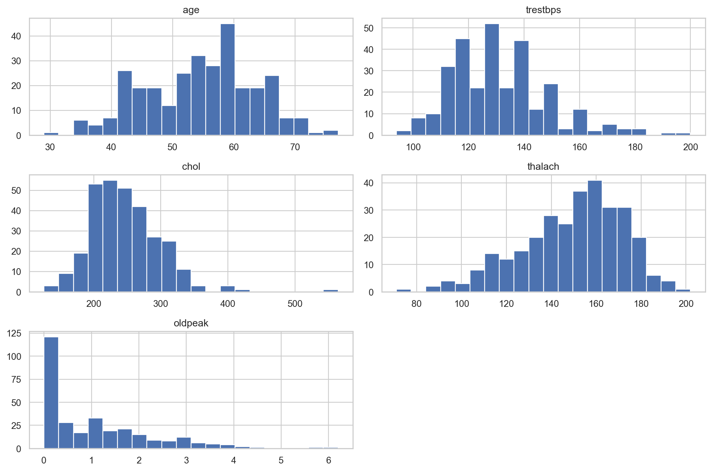
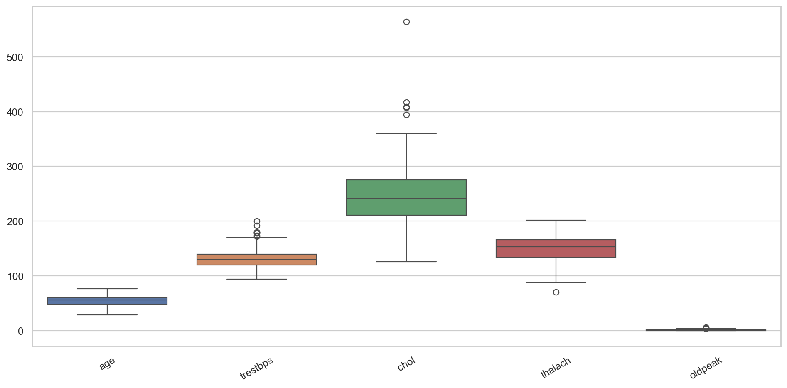
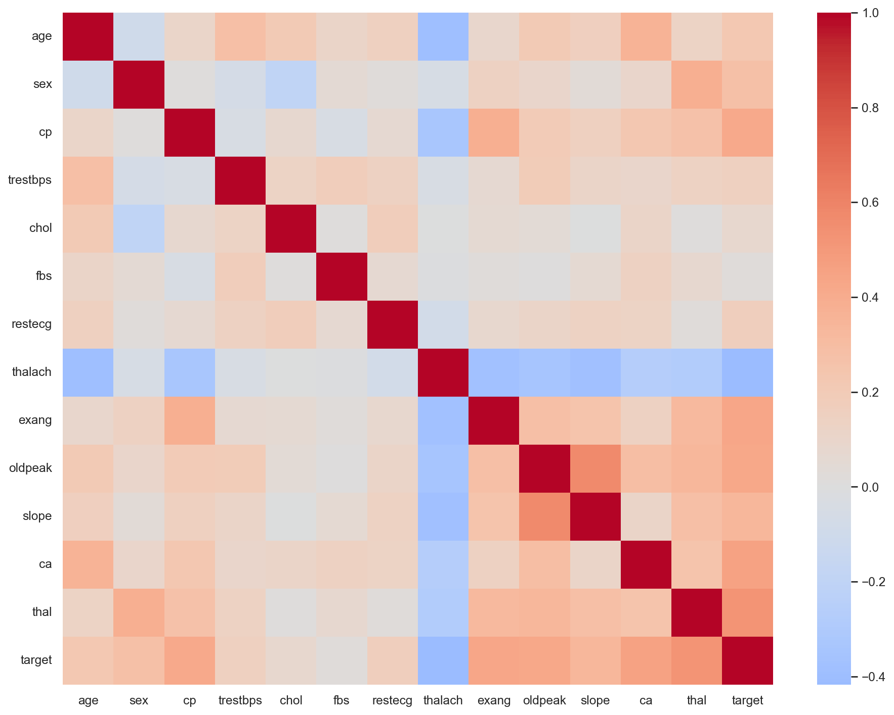
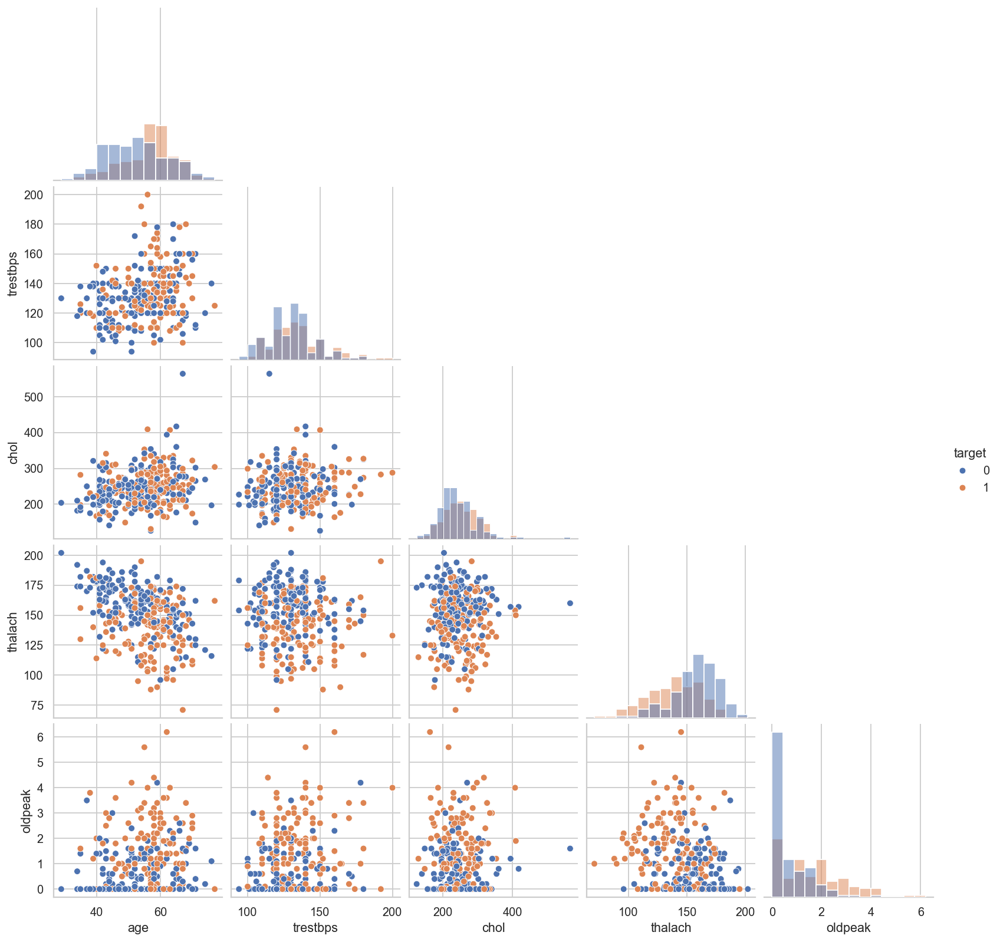
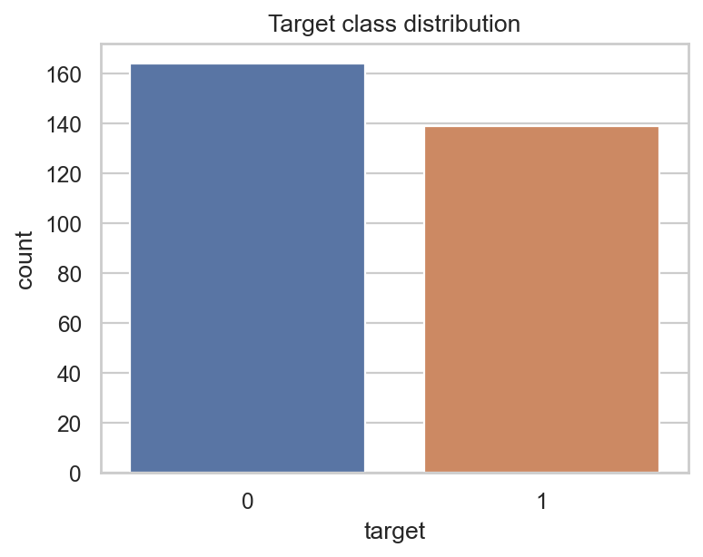
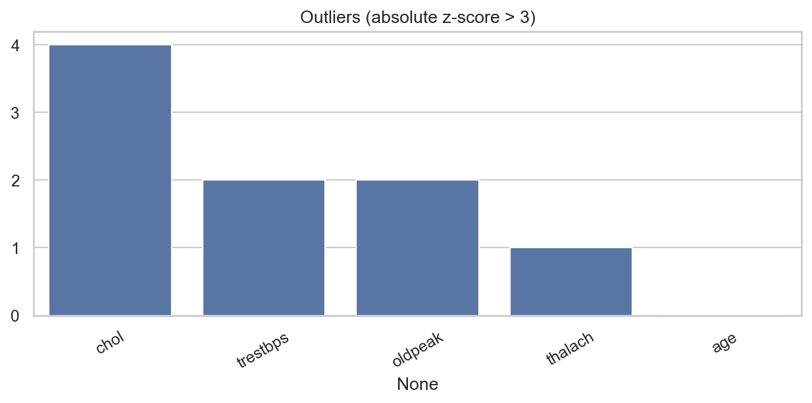
The project compares Logistic Regression, Random Forest, XGBoost, and an RBF-kernel Support Vector Machine. These models provide useful diversity: Logistic Regression is a transparent linear baseline, Random Forest represents bagged non-linear trees, XGBoost represents boosted trees, and SVM provides a margin-based non-linear alternative.
Each model is fitted inside the common preprocessing pipeline and tuned with GridSearchCV. The experiments use five-fold cross-validation and optimize ROC-AUC, which is useful for a binary-risk problem because it evaluates ranking performance across decision thresholds. Holdout reporting includes accuracy, precision, recall, F1-score, and ROC-AUC. Confusion-matrix, ROC, precision–recall, and permutation-feature-importance plots are saved as versioned artifacts.
The recorded training run selected Random Forest. Its cross-validation ROC-AUC was approximately 0.902; the holdout metrics were accuracy 0.852, precision 0.806, recall 0.893, F1 0.847, and ROC-AUC 0.950. These figures are experiment-specific rather than a claim of clinical validity. In a real healthcare setting they would need calibration, subgroup fairness analysis, prospective validation, governance review, and clinician oversight.
Figures 8–11 — evaluation evidence: insert confusion_matrix.png, roc_curve.png, precision_recall_curve.png, and feature_importance.png from screenshots/.
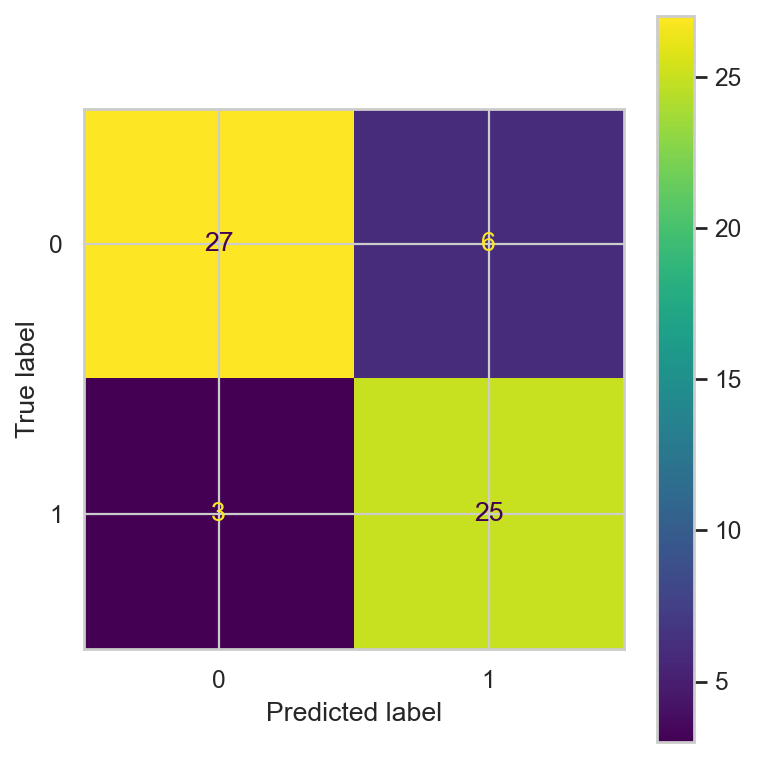
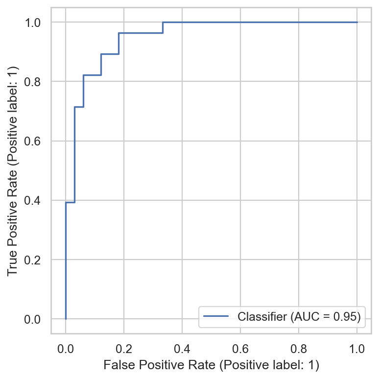
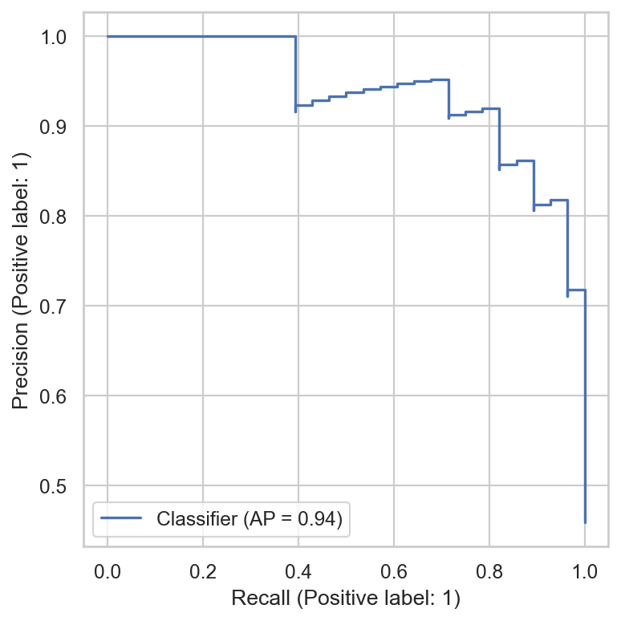
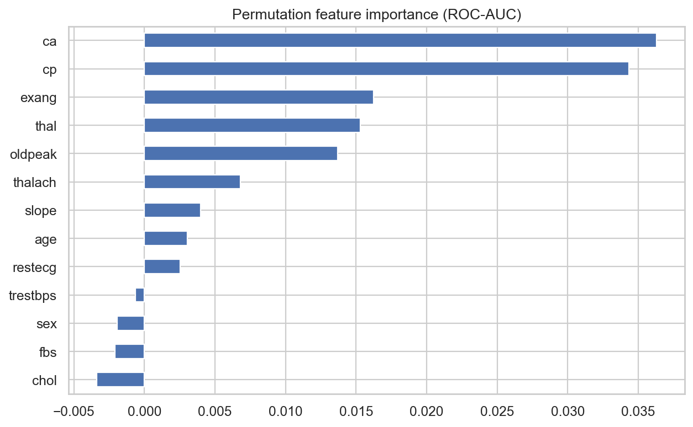
MLflow is used as the experiment-tracking system. Training initializes a named experiment, logs the split and cross-validation configuration, records the best hyperparameters and cross-validation result for every candidate model, and logs the final holdout metrics. The EDA and evaluation images are attached as artifacts, while the selected pipeline is logged in MLflow's scikit-learn model format with an input example and signature.
The selected model is also registered under the name HeartDiseasePredictor. For fast local serving, the same fitted pipeline is persisted as model/heart_disease_pipeline.joblib. The adjacent training_summary.json records the winning model, run ID, model URI, cross-validation scores, and holdout results. This gives both a human-readable summary and a traceable experiment reference.
Dependencies are pinned in requirements.txt, configuration lives in config.yaml, and the project can be trained through python -m src.train. Together with the serialized pipeline, this means preprocessing is not an undocumented manual step. A clean environment can recreate the data processing and model-training workflow.
Figure 12 — MLflow evidence: insert a screenshot showing the experiment, selected run, parameters, metrics, artifacts, and registered model.
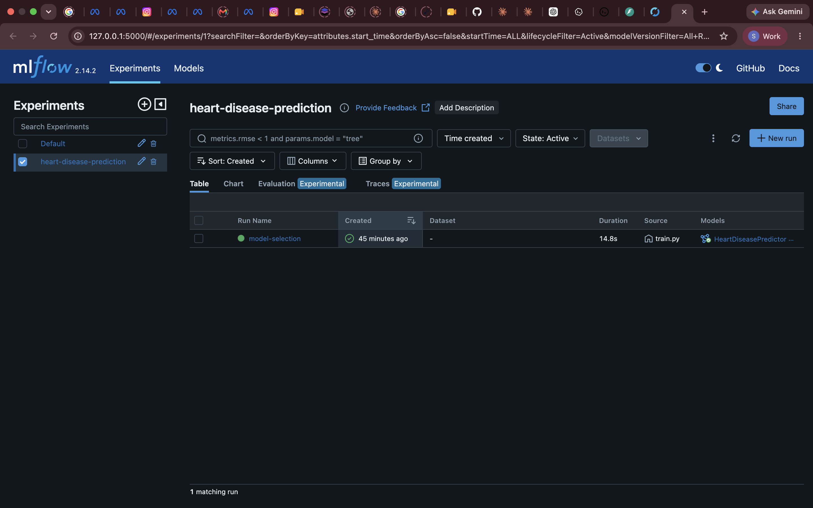
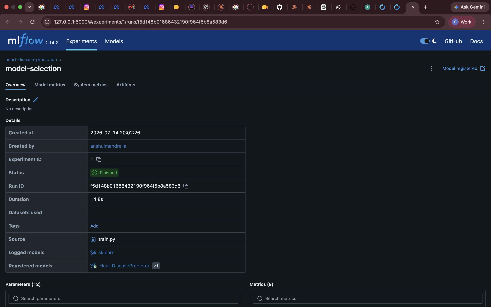
The inference service is implemented with FastAPI in api/app.py. It exposes a health endpoint, Prometheus metrics endpoint, single-record prediction endpoint, and bounded batch-prediction endpoint. The /predict endpoint accepts validated JSON matching the UCI feature contract and returns a binary prediction, readable label, probability, confidence score, and response latency. FastAPI automatically exposes interactive Swagger documentation at /docs.
Input validation constrains values to plausible ranges and forbids unexpected fields. At startup, the service loads the immutable model once rather than loading it for every request. Middleware assigns request identifiers, emits structured logs, and records response latency. These choices make operational failures easier to diagnose and keep the interface explicit for API consumers.
Local validation is reproducible with the following commands:
uvicorn api.app:app --host 0.0.0.0 --port 8000
curl http://localhost:8000/health
curl -X POST http://localhost:8000/predict -H 'Content-Type: application/json' \
-d '{"age":63,"sex":1,"cp":3,"trestbps":145,"chol":233,"fbs":1,"restecg":0,"thalach":150,"exang":0,"oldpeak":2.3,"slope":0,"ca":0,"thal":1}'
Figures 13–14 — API evidence: insert Swagger /docs with a successful request and the /metrics response after making predictions.
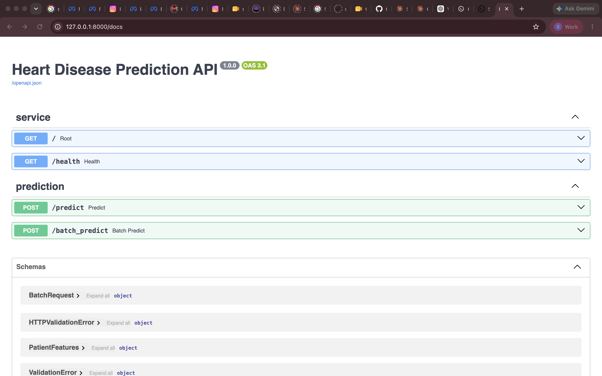
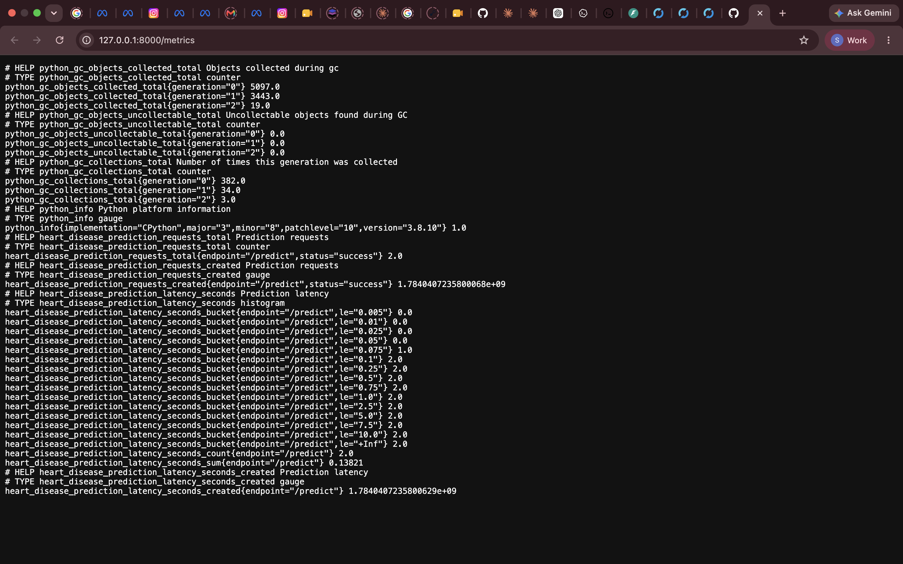
The test suite is organized under tests/ and covers preprocessing, model configuration/training logic, prediction behavior, and API behavior. The project quality commands are pytest -q and flake8 src api tests. In the local validation completed for this submission, all five tests passed and linting passed.
The GitHub Actions workflow at .github/workflows/ci.yml runs on pushes and pull requests. It checks out the code, installs pinned requirements on Python 3.11, lints source/API/test files, runs the test suite, trains the model, uploads the model, summary, plots, and MLflow database as workflow artifacts, and builds the Docker image. A failure in linting, tests, training, artifact upload, or image build fails the workflow, giving clear feedback before a change is merged.
This automation acts as a basic CI gate. Further production maturity could add dependency scanning, code coverage thresholds, image vulnerability scanning, model-performance thresholds, and controlled deployment approvals.
Figure 15 — CI evidence: insert a successful GitHub Actions run showing lint, test, train, artifact upload, and Docker build stages.
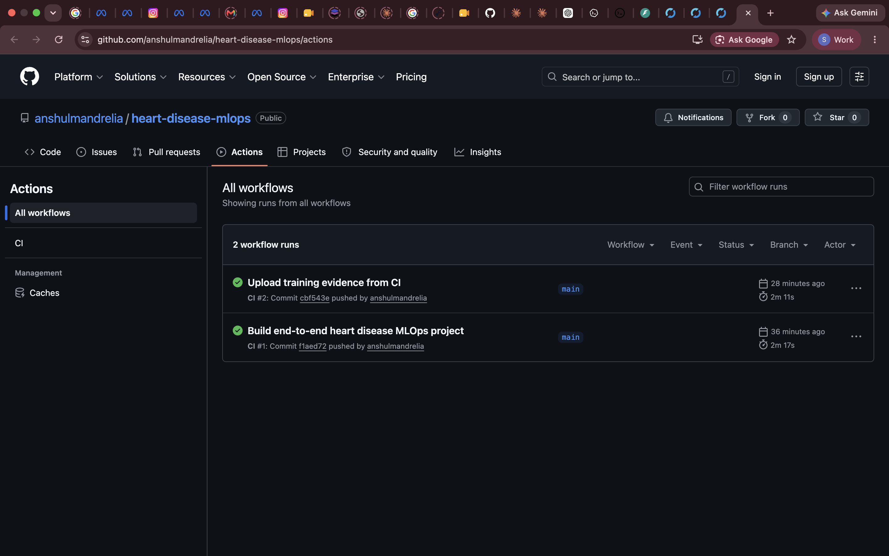
The Dockerfile uses a Python 3.11 slim image, installs the pinned dependencies, copies only the serving source and trained model, and runs under a non-root user. It exposes port 8000 and includes a health check against /health. The image can be built with docker build -t heart-disease-mlops:latest . and run with port 8000 published to the host.
The docker/docker-compose.yml configuration additionally starts Prometheus and Grafana beside the API. Prometheus scrapes the API's /metrics endpoint every 15 seconds. The deployment manifests provide a Kubernetes Deployment with two replicas, resource requests and limits, non-root/read-only security settings, readiness and liveness probes, a ClusterIP Service, and NGINX Ingress routing. They can be applied to Minikube, Docker Desktop Kubernetes, or a cloud Kubernetes cluster after the image is made available to that cluster.
The deployment source is ready, but the final submission must include actual environment proof: a successful Docker build/run and successful Kubernetes rollout. These must be captured in the target Docker/Kubernetes environment rather than fabricated from configuration files.
Figures 16–17 — deployment evidence: insert Docker terminal output with /health, and kubectl get deployment,service,ingress output after rollout.
The API emits JSON-style application logs with request IDs, latency, errors, and prediction outcomes. Prometheus instrumentation publishes a request counter labeled by endpoint and status plus an endpoint latency histogram. The included Grafana dashboard displays request rate, p95 latency, and error rate. These signals give basic visibility into availability and service performance.
Operational metrics alone do not prove model quality. A production ML system should also monitor feature distributions, missingness, schema changes, data drift, calibration, prediction drift, delayed ground-truth performance, and fairness across relevant cohorts. Alerts should lead to documented response procedures such as rollback, retraining review, or traffic throttling.
The model must not be used for diagnosis or treatment. The dataset is small and historically specific, and the project has not undergone clinical validation, privacy assessment, security review, bias assessment, or regulatory approval. Its appropriate purpose is demonstrating the MLOps lifecycle in an academic setting.
Figure 18 — monitoring evidence: insert a Grafana screenshot showing request rate, p95 latency, and error rate after sending sample API traffic.
This assignment demonstrates the complete path from dataset acquisition through EDA, reproducible feature engineering, cross-validated model selection, experiment tracking, serialized model delivery, tested API serving, CI automation, containerization, Kubernetes deployment configuration, and monitoring. The project is structured so that each stage can be inspected independently while still composing into a repeatable end-to-end system.
Before uploading, verify the following items:
VIDEO_SCRIPT.md and submitted with the repository/report link.The project meets the code and configuration requirements. The remaining submission work is to attach authentic runtime evidence from the selected deployment environment and provide the final recorded demonstration.